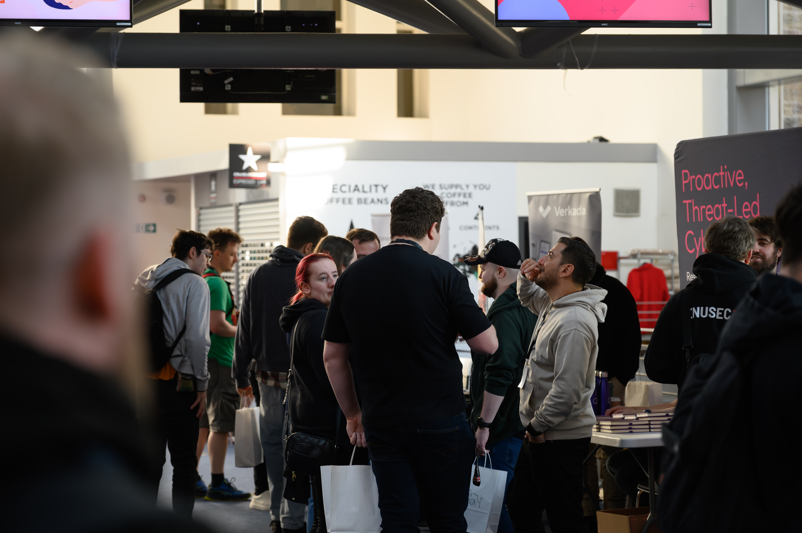

2026
Come Join Us
Le Tour Du Hack returns on May 16 – 17, 2026 for another two days of talks, workshops, hacking challenges, and community. Built by students and supported by a growing cyber community, 2026 is the next chapter in the story.
If 2025 was the milestone year that showed what LTDH could be, 2026 is the invitation to be part of what comes next...
Day 1
Talks, workshops, demos, networking, and community.
Day 2
Capture The Flag, competition energy, and celebrations.
